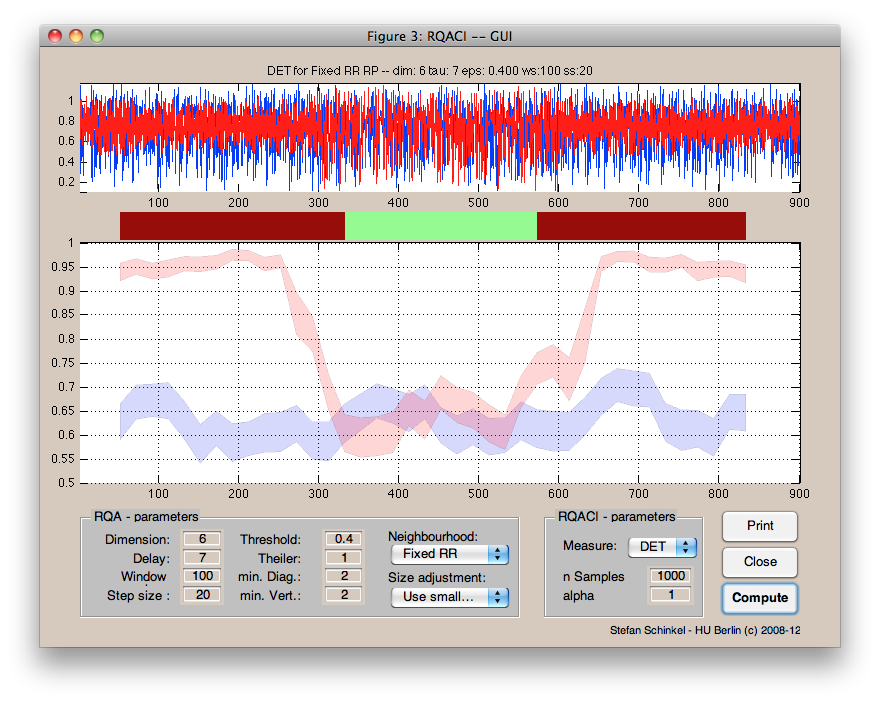

RQACI
About:
RQACI - routines to estimate confidence bounds of recurrence-based complexity measures
If you use this software for data analysis and publication please cite: S. Schinkel, N. Marwan, O. Dimigen and J. Kurths (2009) Confidence bounds of recurrence-based complexity measures, Physics Letters A, 373(26), pp. 2245-2250. DOI:10.1016/j.physleta.2009.04.045
Contents:
- rqaci.m
- - The core routine
- lineDists.m
- - function to extract lines structures from RPs
- bootstrap.m
- - function to bootstrap a distribution
- ciplot.m
- - routine for plot confidence intervals
- cicompare.m
- - routine for comparing overlap confidence intervals
- rqaciGUI.m
- - graphical frontend (GUI) to rqaci
- rqaciGUILayout.m
- - layout of the GUI
Requirements:
- MATLAB (I use 2007, 2010a and 2010b so those should work, as well as any recent version)
- the CRPtoolbox (to construct RPs) -- unless you do this yourself
- a function to estimate percentiles -- either from the Statistics Toolbox of MATLAB or use the stand-in below
Example:
 As a prototypical example we will use the logistic map for different parameters.
To compute the logistic map, save the function below so that it is accessible for MATLAB.
function out = logistic(varargin)
% get params
varargin{4} =[];
if ~isempty(varargin{1}), x0=varargin{1};else x0=rand;end
if ~isempty(varargin{2}), a=varargin{2};else a=3.5;end
if ~isempty(varargin{3}), n=varargin{3};else n=100;end
out = zeros( n, 1 );
out(1) = x0;
for i = 1:n-1
out(i+1) = a*out(i)*(1-out(i));
end
Now we compute the logistic map for 2 cases:
Random (x) and periodic with a random part (y).
The transients are removed.
% random case x = logistic(rand(1),3.89,5000); x = x(end-900+1:end); % transition case y1 = logistic(rand(1),3.40,5000); % periodic y2 = logistic(rand(1),3.89,5000); % random y3 = logistic(rand(1),3.40,5000); % periodic % concat segments y = cat(1, y1(end-300+1:end),y2(end-300+1:end),y3(end-300+1:end)); % and add some noise y = y + rand(size(y)) * .2; x = x + rand(size(x)) * .2;
Plot the data just to have a look at it
subplot(2,1,1); plot(y,'r'); subplot(2,1,2); plot(x,'b');
Setup parameters
tau = 7; dim = 6; tresh = .4; norm = 'rr'; % fixed recurrence rate win = 100; step = 10;
Compute RPs in a windowed fashion and estimate complexity measures
and
their confindence intervals for each window
for iFrame = 1:step:length(x)-win rpX = crp(x(iFrame:iFrame+win),dim,tau,thresh,norm,'sil'); rpY = crp(y(iFrame:iFrame+win),dim,tau,thresh,norm,'sil'); [valX(iFrame,:) ciX(iFrame,:,:)] = rqaci(rpX,750,1); [valY(iFrame,:) ciY(iFrame,:,:)] = rqaci(rpY,750,1); end
Now plot the confidence intervals
figure; ciplot(ciX(1:step:end,1,:),'b') ciplot(ciY(1:step:end,1,:),'r')
This can be done using the GUI by calling (see screenshot)
rqaciGUI(x,y)
Download:
rqaci.zip version:bb5a...f838 md5: b3978a041cecad1ffe811f99f86f7f99prctile.m version:bb5a...f838 md5: d8a7d1393edc437befcfd1d7b7ee0959
(stand-in for prctile.m if Statistics Toolbox is not installed -- found on the net and modified by me)

{kind=link}